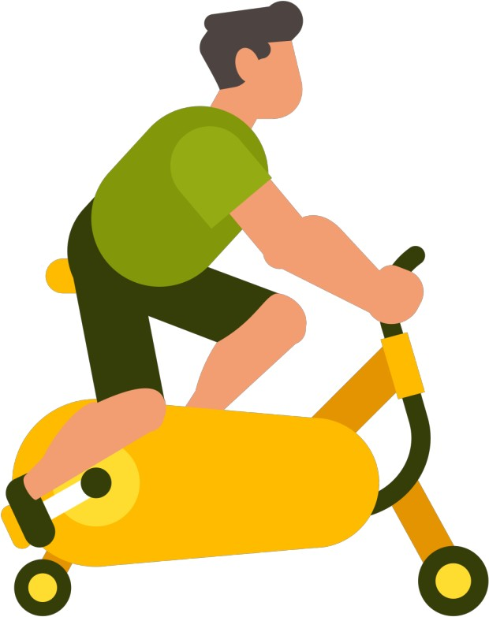

첫 번째 취미는 디자이너 옷들이나, 악세사리들을 모으는것이 취미입니다. 어려서부터 옷에 관심이 많아서 하나 둘씩 모으다보니 자연스럽게 취미 생활로 변해간 것 같습니다. 악세사리 모으는 것도 옷을 모으다보니 자연스레 모으게 되었습니다. 저는 많은 색들의 옷이 있지만, 제일 좋아하는 색은 회색입니다.

두 번째 취미는 운동입니다. 운동을 하면 기분도 좋아지고, 답답할 때 스트레스 푸는 것으로는 운동만 한 게 없는것 같습니다. 지금은 시간이 없어서 예전만큼 열심히 하지는 못하더라도 꾸준히 할려고 노력 하고 있습니다.
세번째로는 음악 듣기 입니다. 저는 한국 노래뿐만 아니라, 팝송이나 여러 나라의 노래를 듣습니다. 가사 해석본을 보면서 작곡가의 의도나 이 곡을 어떻게 만들게 되었는지, 무슨 생각을 가지고 만들었는지를 알 수 있기 때문에 가사를 보면서 노래를 듣는 것을 좋아합니다.